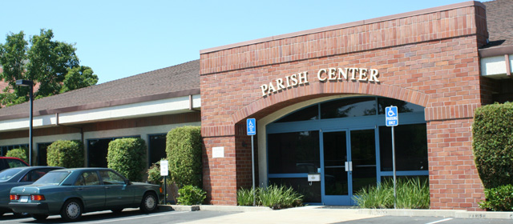

Where All Are Welcome
Call the Parish office : (916) 985-2065
Contact Us

St. John The Baptist Catholic Church
307 Montrose Drive
Folsom, CA 95630
Phone
(916) 985-2065
Fax
(916) 985-7579
parishoffice@stjohnsfolsom.org
Office Hours
8:30 AM - 4:30 PM
Quick Links
New Users
Registration is only available to parish members and is subject to validation and approval. Thank you.
To register, please
call the office at
(916) 985-2065 or email us at
parishoffice@stjohnsfolsom.org with your name, email address, and phone
number (optional). Also, if you are already involved with a ministry,
please
provide this information as well.